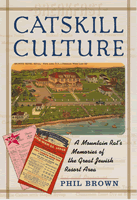

<body bgcolor="#FFFFFF" text="#000000" link="#0000FF" vlink="#CC0000" alink="#CC0000"><center><hr width="350" size="1" align="center" noshade>A search for one's roots in the resort hotels of the Jewish Catskills<hr width="350" size="1" align="center" noshade><p><a href="https://cdcshoppingcart.uchicago.edu/Cart/ChicagoBook.aspx?ISBN=9781566396424&&PRESS=temple" target="_top">Buy this book!</a> | <a href="https://cdcshoppingcart.uchicago.edu/Cart/Cart.aspx?PRESS=temple" target="_top">View Cart</a> | <a href="https://cdcshoppingcart.uchicago.edu/Cart/Cart.aspx?PRESS=temple" target="_top">Check Out</a></p><p></p></center><!--none//--><h1>Catskill Culture</h1>
<H2>A Mountain Rat's Memories of the Great Jewish Resort Area</H2>
<h3>Phil Brown</h3>
<P>cloth 1-56639-642-5 $70.50, Sep 98, <FONT COLOR=#990033>Available</FONT>
<br>paper 1-59213-189-1 $32.95, May 03, <FONT COLOR=#990033>Available</FONT>
<br>Electronic Book 1-43990-644-0 $32.95 <FONT COLOR=#990033>Available</FONT>
<BR> 304 pp
7x10
1&nbsp;map(s) 1&nbsp;figure 91&nbsp;halftones
</P><BLOCKQUOTE><I>"With an insider's love and knowledge and a sociologist's objectivity, Phil Brown has written a book that avoids the sentimentality and condescension that have marred many of its predecessors. Interviews with former employees, owners and guests provide priceless insights into the culture of the Mountains. Brown's own voice is so warm, rich and good natured you will feel as if you are in the care of the most gracious of hosts as you experience life at the great-and not so great-Jewish resorts of the past."</I>
<br>&#151<b>Eileen Pollack</b>, Director of Creative Writing, University of Michigan, and author of <I>The Rabbi in the Attic and Other Stories</I><I></I></BLOCKQUOTE>
<p>A century ago, New Yorkers, hungry for mountain air, good food, and a Jewish environment combined with an American way of leisure, began to develop a resort area unique in the world. By the 1950s, this summer Eden of bungalow colonies, summer camps, and over 900 hotels had attracted over a million people a year. This was the Jewish Catskills of Sullivan and Ulster Counties.
<p>Born to a small hotel-owning family who worked for decades in hotels after losing their own, Phil Brown tells a story of the many elements of this magical environment. His own waiter's tales, his mother's
culinary exploits as a chef, and his father's jobs as maitre d' and coffee shop operator offer a backdrop to the vital life of Catskills summers. <I>Catskill Culture</I> recounts the life of guests, staff, resort owners,
entertainers, and local residents through the author's memories and archival research and the memories of 120 others.
<p>The Catskills resorts shaped American Jewish culture, enabling Jews to become more American while at the same time introducing the American public to immigrant Jewish culture. Catskills entertainment
provided the nation with a rich supply of comedians, musicians, and singers. Legions of young men and women used the Catskills as a springboard to successful careers and marriages. A decline for the resort area beginning in the 1970s has led to many changes. Today most of the hotels and bungalow colonies are gone or in ruins, while other communities, notably those of the Hasidim, have appeared. The author includes an appendix listing over 900 hotels he has been able to document and invites readers to contact him with additional entries.
<BR>&nbsp;<h2>Excerpt</h2><P>Excerpt available at <a href="http://www.temple.edu/tempress">www.temple.edu/tempress</a></p>
<BR>&nbsp;<h2>Reviews</h2>
<p><I>"A powerful blend of personal memoir, sociological study, and historical ethnography, </I>Catskill Culture<I> recalls the life of Jewish Catskill mountain resort culture from its early years before World War II through its heyday in the postwar era and its subsequent decline in recent decades. Phil Brown's engaging and eminently readable account is shot through with nostalgic ambivalence for the world of work that produced the leisure industry known as 'the borscht belt'... An insightful exploration of the workplace culture of the Catskills resorts, the book speaks to all who have ever visited the mountains or heard stories about them as well as to students of contemporary ethnicity and culture."</I>
<br>&#151<b>Deborah Dash Moore</b>, Professor of Religion, Vassar College, and author of <I>To the Golden Cities: Pursuing the American Jewish Dream in Miami and L.A.</I>
<p><I>"With part autobiography, part ethnography, Brown takes us back, nostalgically, to the halcyon days of this resort community. Remarkably, he depicts the area with such vivid illustrations that he brings alive the emotions, sentiments, and good will for which the Catskills were known. A labor of love...</I>Mazel Tov<I>, Phil!"</I>
<br>&#151;<b><i>Contemporary Sociology</i></b>
<p><I>"Using photographs and interviews, [Brown] takes a nostalgic look at the Borscht Belt and its decline....A pleasant read."</I>
<br>&#151<b><I>Library Journal</I></b>
<p><I>"Because of his fond experience, Brown's ethnography is much warmer, more personal than most. It is a documentary of assimilation and a return to one's roots."</I>
<br>&#151<b><I>Publishers Weekly</I></b>
<p><I>"One of the virtues of Phil Brown's unapologetically nostalgic memoir of growing up and working in the legendary Catskill Mountains&#151as busboy, cook, waiter, musician and all around 'mountain rat'&#151is that his particular nostalgia is profoundly earned. Indeed, he is deeply in touch with the vanished Jewish world of his parents who labored for their entire lives in the mountains. Brown offers an insider's&#151a native ethnographer's&#151account of this region and the astonishing Jewish culture it spawned."</I>
<br>&#151<b><I>American Jewish History</I></b>
<p><i>"Whether you remember the summers in the Catskills, or heard nostalgic tales about this bygone era, this book is worth reading."</i>
<br>&#151<b><i>Lifestyles</i> Magazine in Buffalo, NY</b>
<p><i>"Part memoir, part history, part sociology: </i>Catskill Culture<i> is basically an engagingly-written jog down Memory Lane augmented by anecdotes..."</i>
<br>&#151<b><i>The Journal of American Ethnic History</b></i>
<BR>&nbsp;<h2>Contents</h2><P>
<p>Acknowledgments
<br>1. Returning to the Catskills
<br>2. How the Jewish Catskills Started
<br>3. Kuchalayns and Bungalow Colonies
<br>4. Hotel Life
<br>5. Entertainment
<br>6. "Mountain Rats": The More Skilled Workers and Other Veterans
<br>7. Young Workers: Waiters, Busboys, Counselors, Bellhops, and Others
<br>8. Guests
<br>9. Resort Religion and Yiddishkeit
<br>10. Decline, Present, and Future
<br>11. What Made It So Special?
<br>Appendix: Hotels of the Catskills
<br>Notes
<br>Bibliography
<br>Index
<br>Photographs
</P><BR>&nbsp;<H2>About the Author(s)</H2>
<P><B>Phil Brown</B>, Professor of Sociology, Brown University, is co-founder of the Catskills Institute and the editor of <I>In The Catskills: A Century of the Jewish Experience in "The Mountains."</I></P>
<BR><H2>Subject Categories</H2>
<p><A HREF="/tempress/jewish.html" TARGET="_top">Jewish Studies</a>
<BR><A HREF="/tempress/american.html" TARGET="_top">American Studies</a>
<BR><A HREF="/tempress/sociology.html" TARGET="_top">Sociology</a>
</p>
<p align="center"><a href="https://cdcshoppingcart.uchicago.edu/Cart/ChicagoBook.aspx?ISBN=9781566396424&&PRESS=temple" target="_top">Buy this book!</a> | <a href="https://cdcshoppingcart.uchicago.edu/Cart/Cart.aspx?PRESS=temple" target="_top">View Cart</a> | <a href="https://cdcshoppingcart.uchicago.edu/Cart/Cart.aspx?PRESS=temple" target="_top">Check Out</a></p><p><font face="Arial" size="1"><a href="copyright.html" onMouseOver="window.status='Web Copyright Policy';return true;" onMouseOut="window.status=''" title="Web Copyright Policy">&copy;</a> 2015 <a href="http://www.temple.edu" target="new" onMouseOver="window.status='Link to Temple University home page';return true;" onMouseOut="window.status=''" title="Link to Temple University home page">Temple University</a>. All Rights Reserved. http://www.temple.edu/tempress/titles/1310_reg.html</font></p>